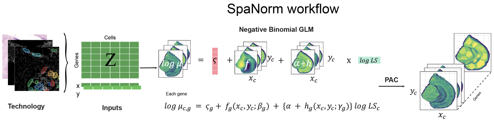

SpaNorm
Spatially aware library size normalisation, in R and Python

SpaNorm
Spatially aware library size normalisation for spatial transcriptomics, in R and Python.
SpaNorm is a spatially aware library size normalisation method that removes library size effects from spatial molecular data while retaining biology. Standard single-cell inspired normalisation is not appropriate for spatial data, because library size is confounded with biology across space (Bhuva et al. 2024; Atta et al. 2024). SpaNorm models gene- and location-specific effects with smooth thin plate spline functions and keeps only the variation unrelated to library size.
Spatially aware
Gene- and location-specific effects are modelled with smooth thin plate spline functions, so only variation unrelated to library size is removed and biology is kept.
R and Python
The R package SpaNorm (Bioconductor) and the Python package spanormpy (on AnnData) share the same method and the same documentation, with R | Python tabs throughout.
Built to scale
Parallel workers, block-wise processing of disk-backed counts (R) and an optional GPU backend, with up to 2.7x faster spanorm on one H100 MIG slice (benchmark).
Install
if (!requireNamespace("BiocManager", quietly = TRUE))
install.packages("BiocManager")
# release version
BiocManager::install("SpaNorm")
# development version from GitHub
BiocManager::install("BhuvaLab/SpaNorm")pip install spanormpy
pip install git+https://github.com/BhuvaLab/spanormpy # development versionFor a GPU, install the CUDA build of PyTorch first (see https://pytorch.org), then use backend="gpu" or the default backend="auto". Optional extras: pip install "spanormpy[spatial]" for SpatialData input.
How it works

Code examples throughout the site appear in R | Python tabs. Choosing a language in one tab switches every tab on the site, and the choice is remembered. See R vs Python for the name map and the intentional differences.
Cite
If you use SpaNorm or spanormpy, please cite:
Salim A, Bhuva DD, Chen C, Tan CW, Yang P, Davis MJ, Yang JYH. SpaNorm: spatially-aware normalization for spatial transcriptomics data. Genome Biology 2025, 26(1):109. doi:10.1186/s13059-025-03565-y
In R, citation("SpaNorm") prints this reference and a BibTeX entry.
Project
Authors
SpaNorm (R)
- Dharmesh D. Bhuva, author and maintainer
 (d.bhuva@uq.edu.au)
(d.bhuva@uq.edu.au) - Agus Salim, author
- Ahmed Mohamed, author
spanormpy (Python)
- Dharmesh D. Bhuva
- Agus Salim
Links and licence
- Source: SpaNorm (R), spanormpy (Python)
- Packages: Bioconductor, PyPI
- Report a bug: SpaNorm, spanormpy
- Licence: GPL (>= 3)
Downloads
Status